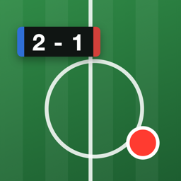
PitchCam User Guide
Record, stream, and save your match, one step at a time · 繁體中文 · 简体中文 · Back to Support
How to use this guide
Follow the steps in order. Each step is one action. Finish it, then go to the next one.
The red numbered boxes1 on the pictures show exactly where to tap. Words in a box like this are the exact text of a button or label on the screen.
The football pitch in the pictures is an illustration. When you use the app, you will see what your iPhone camera sees.
Contents
Part 1: Using PitchCam
- What you need
- Download PitchCam
- Open PitchCam for the first time
- The Home screen
- Enter the match details
- The camera screen
- Start and stop recording
- Keep the score
- Change period (first half to second half)
- Set up live streaming (first time only)
- Go live
- If the internet drops during a live stream
- End the live stream
- End the match and see the summary
- Save the video to the Photos app
- Manage recordings (free space, delete)
- Useful settings
- What a message on the screen means
Part 2: Streaming to Facebook
Part 1: Using PitchCam
1. What you need
- An iPhone with iOS 18 or later.
- A phone tripod: a match is long, and holding the phone gets tiring and shaky. Use a tripod with a phone clamp, set up high at the side of the pitch.
- A power bank and cable: recording and streaming at the same time uses a lot of battery. Keep the phone plugged in to a power bank.
- Enough storage: a 90-minute match needs about 30 GB in 4K, or about 10 GB in 1080p. The PitchCam Home screen tells you how long you can still record.
- Internet (only for live streaming): mobile data or Wi-Fi, with a steady signal. If you only record, you don't need internet.
2. Download PitchCam
- On your iPhone Home Screen, find the blue App Store icon and tap it once to open it.
- Tap Search (the magnifying glass) in the bottom-right corner.
- Tap the search box at the top, type PitchCam, and tap search on the keyboard.
- Find PitchCam with the green football pitch icon, and tap Get next to it.
- Follow the prompt on the screen: double-click the side button, or enter your Apple Account password.
- When Get changes to Open, the download is done. The PitchCam icon is now on your Home Screen.
3. Open PitchCam for the first time
- Tap the PitchCam icon on your Home Screen.
- Turn your phone sideways. PitchCam only works in landscape.
- The first time you open the camera screen, a small window asks whether PitchCam may access the camera. Tap Allow. Without it, PitchCam can't record.
- Next it asks about the microphone. Tap Allow again. Without it, your video will have no sound.
- The first time you save a video to Photos, it asks whether PitchCam may add to Photos. Tap Allow.
Open the iPhone Settings app (grey gear icon) → scroll down and tap PitchCam → turn on the switches next to Camera and Microphone (they turn green), and set Photos to “Add Photos Only”.
Or in PitchCam, tap Settings → General. If you see a yellow Open Settings button, tap it to jump to the right place.
4. The Home screen
This is the first screen you see when you open PitchCam.
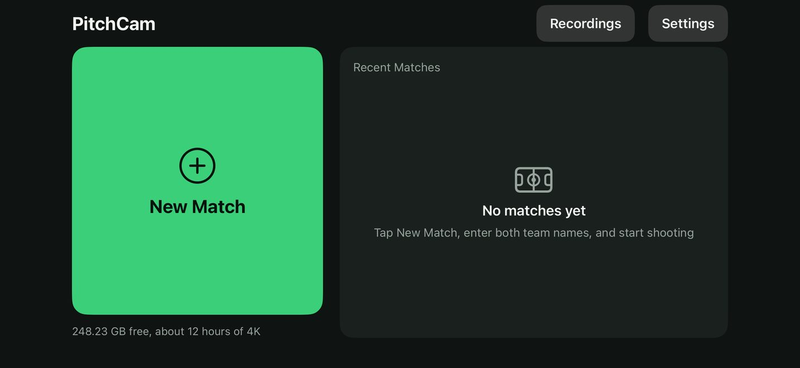
- 1 New Match: the big green button. Tap it every time you film a new match.
- 2 Recordings: see all your videos and free space, and delete videos.
- 3 Settings: scoreboard size, recording quality, and so on. You usually don't need to change anything.
The small text under the green button tells you how much space is left and about how many hours you can still record.
After your first match, the Home screen shows two more things:
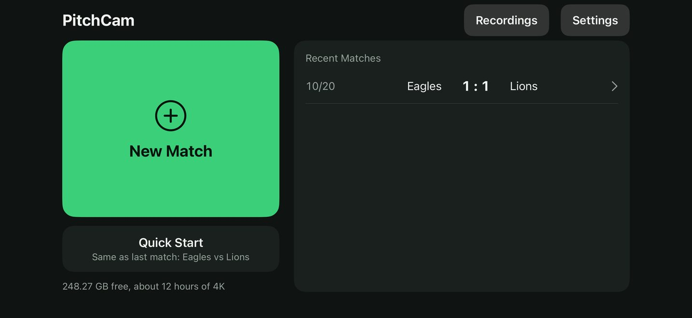
- 1 Quick Start: uses the same two teams and colors as last time, and takes you straight to the camera screen. The small text says “Same as last match: … vs …”.
- 2 Recent Matches on the right: each row is one match. Tap it to see the match summary. If it says “In progress, tap to resume” in yellow, tapping it takes you back to the camera screen.
5. Enter the match details
- On the Home screen, tap New Match. The Match Settings screen opens.
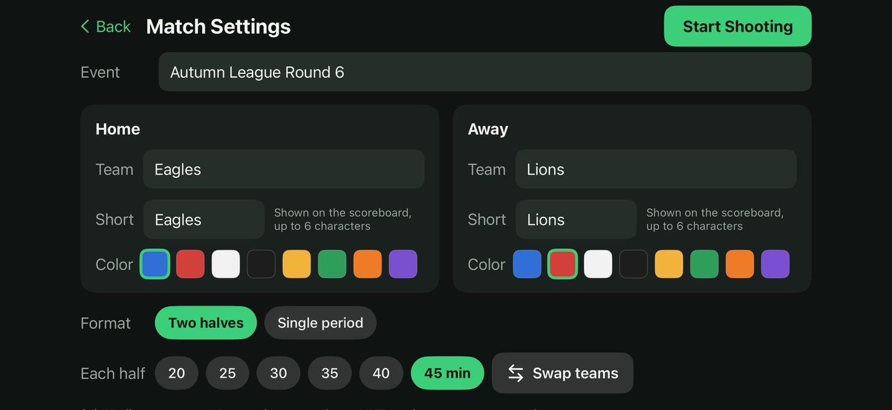
- 1 Event: tap the box and type the name of the competition, for example “Autumn League Round 6”. You can leave it empty; it will be called “Friendly”.
- 2 Home team name: tap the first box in the Home card on the left and type the home team's name.
- 3 Short: the short name shown on the scoreboard in the video, up to 6 characters. It is filled in for you from the team name. Tap it if you want to change it.
- 4 Color: tap a color dot for the team's shirt color. The selected dot gets a thick green ring.
- 5 Away team: in the Away card on the right, enter the away team's name and choose a color the same way. Don't choose the same color for both teams, or they are hard to tell apart on the scoreboard (a yellow warning appears if you do).
- 6 Format: choose Two halves for a normal match. If the match is played as one period, choose Single period.
- 7 Match length: tap a number to choose how many minutes each half lasts (20 to 45).
- 8 Swap teams: if you put the home and away teams the wrong way round, tap this to switch them.
- 9 When everything is filled in, tap the green Start Shooting button in the top-right corner. The camera screen opens.
At the bottom of the screen you'll see “Live for this match: …” or a note that no live setup exists yet. Recording without streaming is perfectly fine. If you want to stream, you set it up on the camera screen (see chapter 10).
6. The camera screen
You'll see this screen the whole time you film. The big picture on the left is what the camera sees, and exactly this area is recorded. Here is what each button does; later chapters explain them step by step.
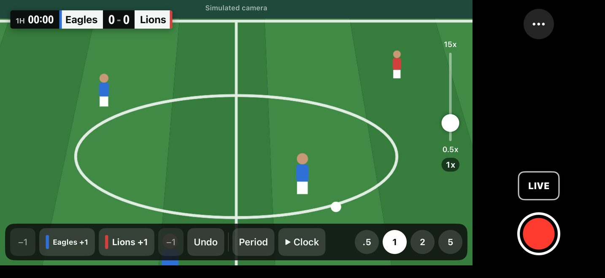
| No. | What it is | What it does |
|---|---|---|
| 1 | Scoreboard | Shows the score, teams, and time. It appears in the recording and the live stream. Tap it to open the score editor. |
| 2 | Zoom slider | Drag up or down with your finger to zoom in or out. |
| 3 | −1 (home) | Takes 1 goal off the home team, if you tapped by mistake. |
| 4 | Home +1 | Tap when the home team scores. |
| 5 | Away +1 | Tap when the away team scores. |
| 6 | −1 (away) | Takes 1 goal off the away team. |
| 7 | Undo | Undoes the last action. You can keep tapping to undo more. |
| 8 | Period | Switches between 1st half, 2nd half, extra time, and penalties. |
| 9 | Clock | Starts the match clock. While running it shows Pause; tap to stop it. |
| 10 | Zoom buttons | Round buttons such as .5, 1, 2, 5. Tap one to jump to that zoom. |
| 11 | … | More: Match Settings, Broadcast Settings, and End Match. |
| 12 | LIVE | Starts or ends the live stream. |
| 13 | Red round button | Starts or stops recording. |
7. Start and stop recording
Start recording
- Set up the phone sideways on the tripod. Check that the picture on the left shows the whole pitch.
- Tap the red round button in the bottom-right corner.
- The red circle turns into a red square, and a timer starts below it (for example 00:04). You are now recording.
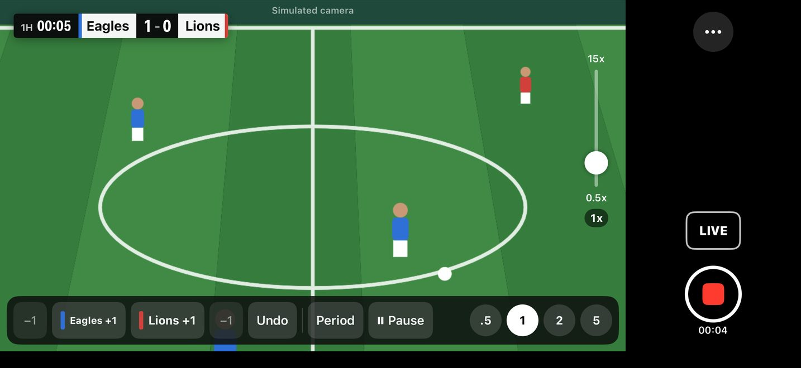
While recording, PitchCam saves a part every 5 minutes. Even if the phone dies or the app closes, what you recorded before is kept.
Stop recording
- Tap the red square button again.
- A window asks “Stop recording?”. Tap the red Stop Recording. If you tapped by mistake, tap Keep Recording.
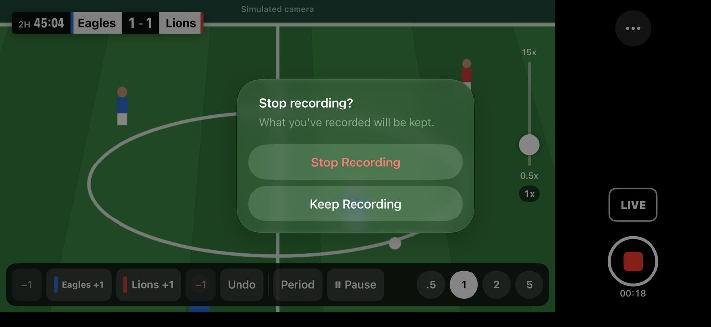
8. Keep the score
The easy way: buttons at the bottom
- Home team scores: tap Home short name +1. The phone vibrates gently and the scoreboard updates.
- Away team scores: tap Away short name +1.
- Tapped by mistake: tap −1 next to that team, or tap Undo. “Undid last step” appears briefly in the middle.
More changes: tap the scoreboard
Tap the scoreboard in the top-left corner to open the Score & Period panel. Here you can change the score, team names, time, and added time.
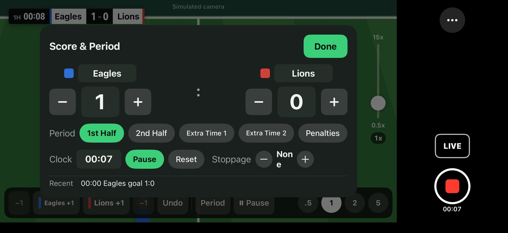
- 1 Team name: tap to change the name shown on the scoreboard (up to 6 characters).
- 2 − and 4 +: take away or add 1 goal.
- 3 The score number: tap it to choose the correct score from 0 to 20.
- 5 Period buttons: jump straight to that period.
- 6 Time: tap it, enter minutes and seconds, then tap Apply to match the referee's watch.
- 7 Start / Pause: start or pause the match clock.
- 8 Reset: sets the time of this period back to zero.
- 9 The + for added time: each tap adds 1 minute. A green “+1”, “+2” appears on the scoreboard.
- 10 Done: closes the panel. Tapping the dark area outside the panel also closes it.
“Recent” at the bottom of the panel lists the last 3 goals, so you can check them.
9. Change period (first half to second half)
- At half-time, tap Pause to stop the clock.
- Before the second half, tap Period at the bottom. A menu opens.
- Tap 2nd Half. The current period has a check mark.
- At kick-off, tap Clock. The time continues from 45:00 (for 45-minute halves), not from zero.
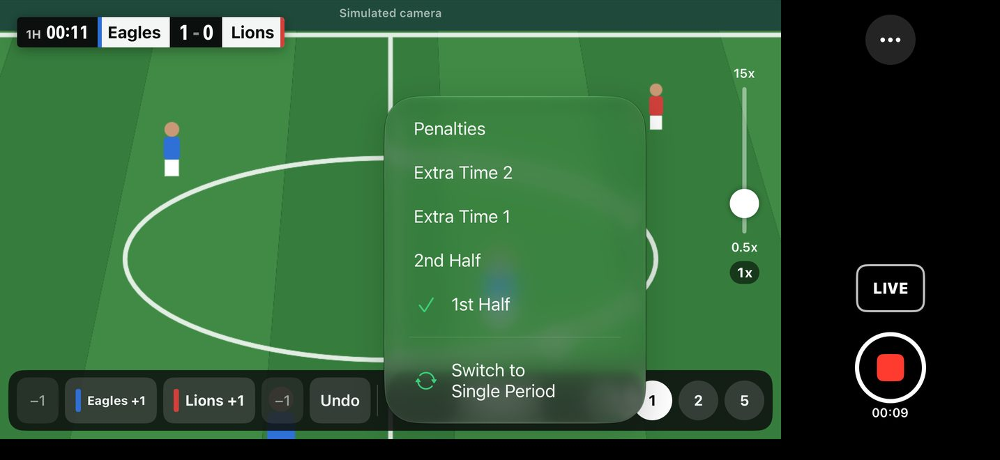
- Extra time: choose Extra Time 1 and Extra Time 2, the same way as the halves.
- Penalties: choose Penalties. Now +1 counts penalty goals, and a yellow “PK 4-3” appears on the scoreboard. The match score stays the same.
- Chose the wrong period: tap Undo. The time is restored too.
- The match is one single period: tap Switch to Single Period at the top of the menu.
10. Set up live streaming (first time only)
To stream, you need a “stream key”: a long code of letters and numbers from the streaming platform, like a password for streaming. To get a Facebook stream key, first follow chapter 20, then come back here. For YouTube, the key is in YouTube Studio → Go live → Stream key.
- Copy the stream key to your iPhone (see chapter 21).
- On the camera screen, tap LIVE on the right. The first time, the Set Up Live screen opens.
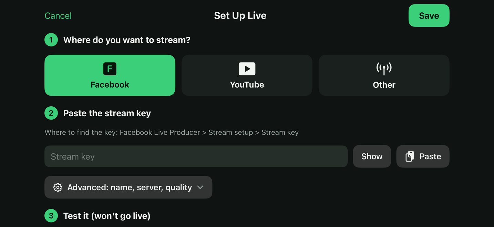
- 1 “Where do you want to stream?”: tap your platform, for example Facebook. The selected one turns green.
- 2 Tap Paste. The stream key you copied fills in box 3 (it shows as dots, which is normal; tap Show to see it). If the iPhone asks whether to allow pasting, tap Allow Paste.
- Swipe up on the screen to find “Test it (won't go live)”.
- Tap Test Connection (1 in the picture below). This is only a test. It does not go live, and nobody can see it.
- Wait a few seconds. When the green “Connected. Ready to go live” appears (2 below), the setup is correct. If red text appears, see chapter 18.
- Tap Save in the top-right corner (3 below). From now on, tapping LIVE goes live straight away.
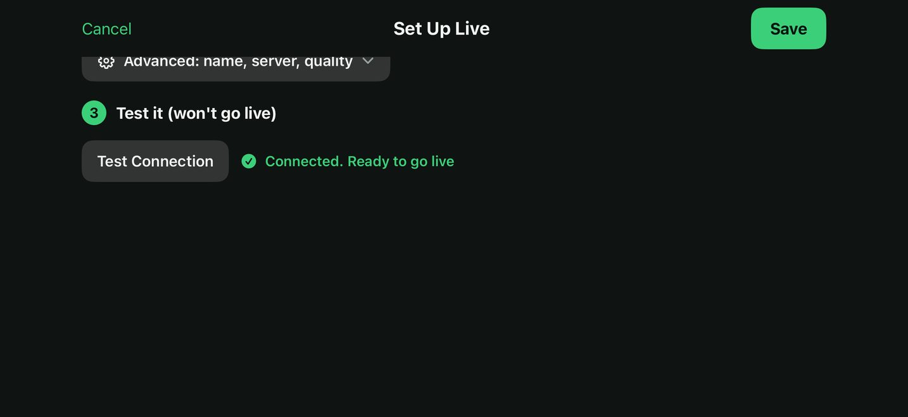
11. Go live
- Make sure the phone has internet (mobile data or Wi-Fi).
- On the camera screen, tap LIVE.
- A big countdown 3, 2, 1 appears in the middle. The LIVE button changes to Cancel; tap it quickly if you change your mind.
- After the countdown the button shows “Connecting”. Wait a moment.
- When the LIVE button turns red, a timer starts below it and the phone vibrates. You are live.
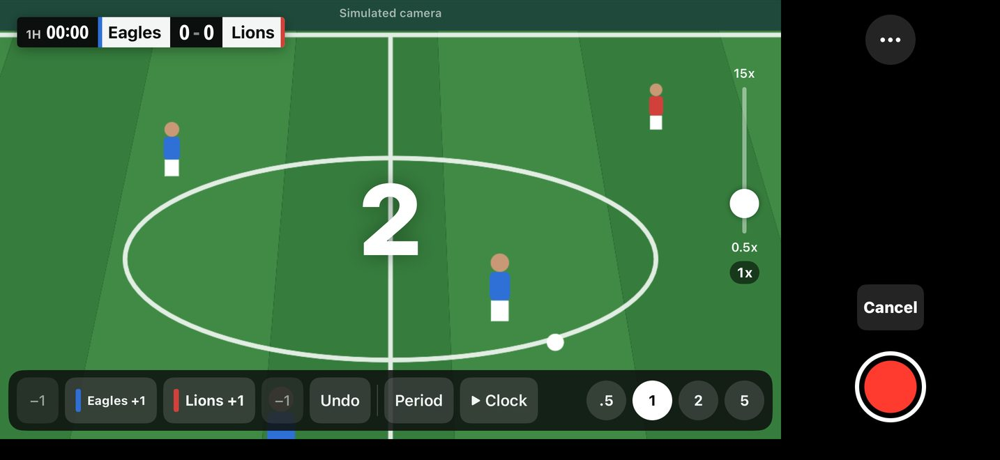
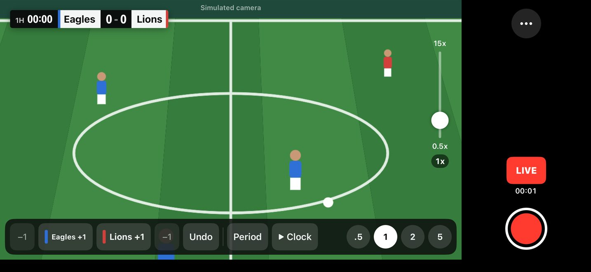
12. If the internet drops during a live stream
You don't need to do anything. PitchCam reconnects by itself, and recording continues.
- While reconnecting, the LIVE button turns yellow and shows the attempt number (for example 2/10). The top of the screen says “Reconnecting live 2/10”.
- When the internet comes back, the button turns red again by itself.
- If 10 attempts fail, the button changes to a yellow Retry, and the top of the screen says the live stream stopped. When the signal is better, tap Retry to go live again.
If the signal stays poor, move to a spot with better reception, or use Wi-Fi.
13. End the live stream
- While live, tap the red LIVE button again.
- “End live stream?” appears. Tap the red End Live. If you tapped by mistake, tap Keep Streaming.
- The LIVE button goes back to normal and the live stream ends. If you were also recording, recording continues; tap the red button to stop it.
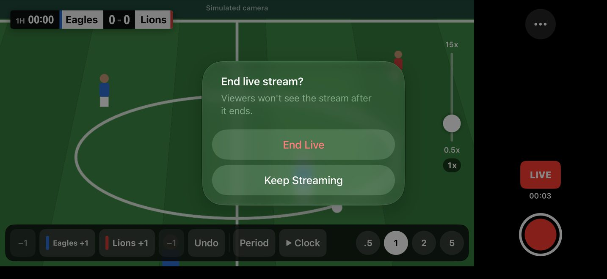
14. End the match and see the summary
- When the match is over, tap … in the top-right corner of the camera screen.
- Tap the red End Match in the menu.
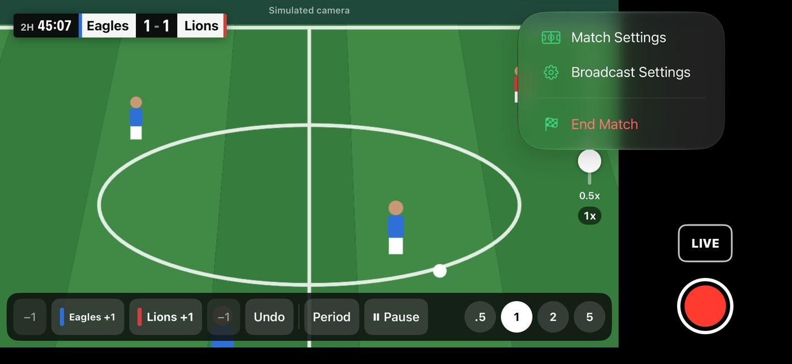
- “End this match?” appears. Tap the red End Match. PitchCam stops recording and streaming automatically.
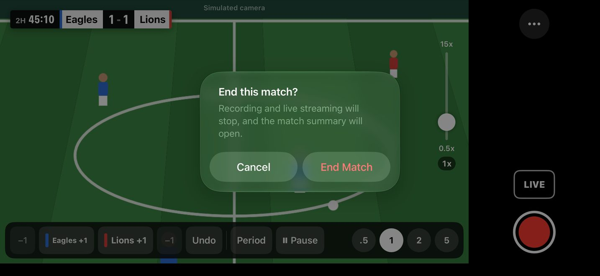
- The Match Over summary appears.
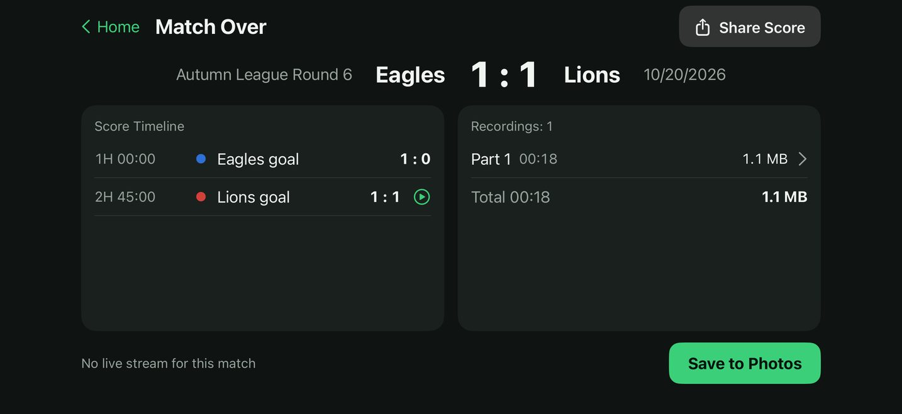
- 1 The final score.
- 2 Score Timeline: the time of each goal. If there's a play icon next to it, tap it to watch that goal.
- 3 Recordings: the video parts of this match. Tap one to play it.
- 4 Save to Photos: saves the video to the Photos app (next chapter).
- 5 Share Score: sends the score and goal times by message, WhatsApp, and so on.
- 6 Home: back to the Home screen.
After you end a match, PitchCam remembers both teams, so you can pick them from Saved Teams next time.
15. Save the video to the Photos app
Your video is first kept inside PitchCam. To share, upload, or edit it, save it to Photos first.
- In the match summary, tap Save to Photos in the bottom-right corner. (You can also save from Recordings on the Home screen; see the next chapter.)
- The first time, the iPhone asks whether PitchCam may add to Photos. Tap Allow.
- The button shows “Working…”. PitchCam is joining the 5-minute parts into one complete video. Longer videos take longer. Don't close the app.
- When “Saved to Photos.” appears, it's done. Tap OK.
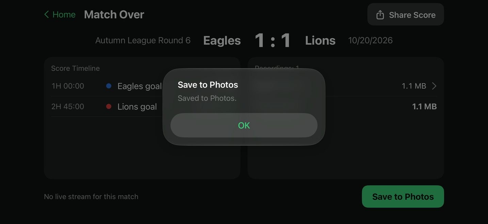
Find the video in Photos
- Go to the iPhone Home Screen and open Photos (the colorful flower icon).
- The video is the newest item (usually at the bottom or the start). Videos show their length in the bottom-right corner of the thumbnail.
- Tap the video to play it. Tap the share icon in the bottom-left corner to send it.
16. Manage recordings (free space, delete)
- On the Home screen, tap Recordings in the top-right corner.
- The top-right corner shows how much space is used and free.
- Each row is the video of one match.
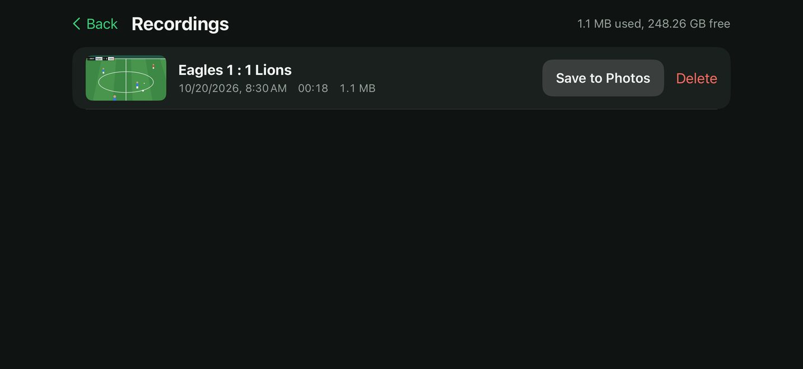
- 1 Save to Photos: same as the previous chapter.
- 2 Delete: deletes all video parts of this match. It asks “Delete recordings?” first; tap the red Delete to confirm. This can't be undone, so save to Photos first. The score history is kept.
17. Useful settings
Tap Settings on the Home screen, or … → Broadcast Settings on the camera screen. There are four tabs: Live, Record, Scoreboard, General. Most people don't need to change anything. Some options are locked while recording or streaming.
Scoreboard
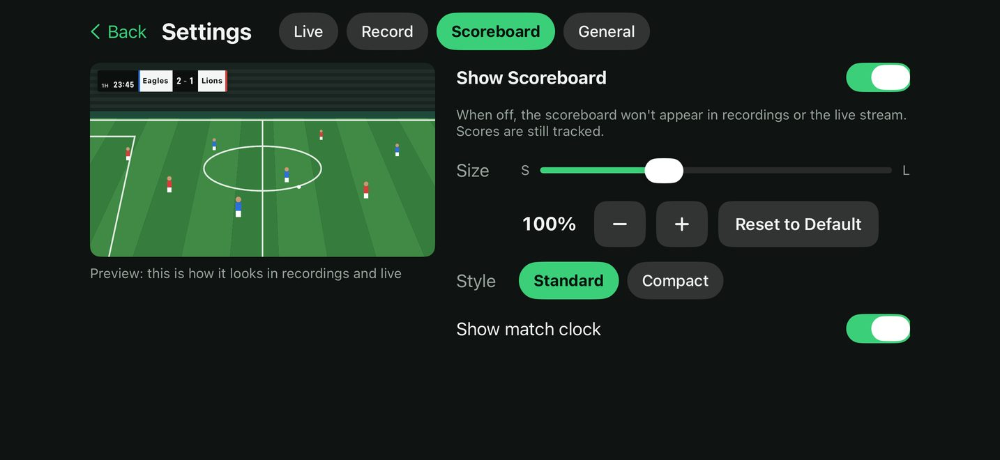
- 1 Show Scoreboard: when off, the recording and live stream have no scoreboard, but the score is still kept.
- 2 Size: drag the slider to make the scoreboard bigger or smaller. Reset to Default puts it back.
- 3 Style: Standard, or Compact (a smaller bar).
- 4 Show match clock: when off, the scoreboard shows no time.
Record
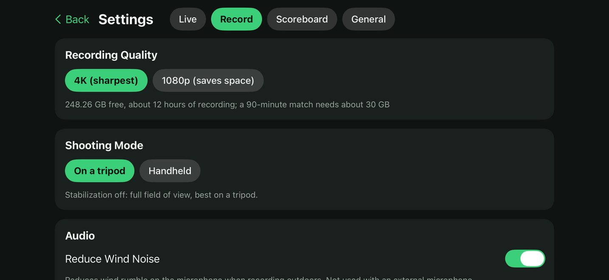
- 1 Recording Quality: “4K (sharpest)” or “1080p (saves space)”. Choose 1080p if your phone is short of space. Older iPhones always use 1080p.
- 2 On a tripod: choose this when using a tripod. The picture is widest.
- 3 Handheld: choose this when holding the phone. The picture is steadier but slightly narrower.
- 4 Reduce Wind Noise: reduces the rumble of wind on the microphone outdoors. We recommend keeping it on.
General
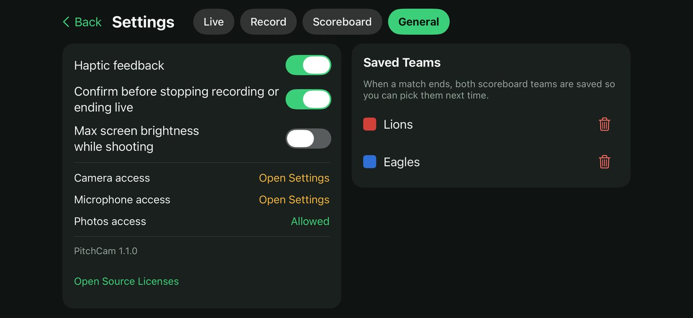
- 1 Confirm before stopping recording or ending live: asks you once more before stopping, so you don't stop by accident. We recommend keeping it on.
- 2 Max screen brightness while shooting: turn on if you can't see the screen in bright sun. It uses more battery.
- Below, the camera, microphone, and photos permissions should all show a green “Allowed”.
18. What a message on the screen means
Yellow messages at the top of the camera screen
| Message | Meaning | What to do |
|---|---|---|
| Hold your phone in landscape for the correct video orientation | The phone is upright | Turn the phone sideways. |
| The screen is upside down. Turn off orientation lock or turn your phone back. | The phone is upside down | Turn the phone around; or swipe down from the top-right corner and turn off Orientation Lock (the lock icon). |
| iPhone is getting hot. Keep it out of direct sunlight. | The phone is too hot | Shade the phone and take off its case. Live quality may drop automatically and recovers when the phone cools down. |
| Only about N min of storage left | The phone is almost full | In Recordings, delete old videos you've already saved to Photos. |
| Battery N%. Connect a power bank. | Battery below 20% | Plug in a power bank. |
| Reconnecting live N/10 | The internet dropped | Wait; see chapter 12. |
| Live stopped: …. Tap LIVE to go live again | 10 reconnection attempts failed | Check the internet, then tap Retry. |
“Couldn't Continue” windows
| Message | What to do |
|---|---|
| Not enough storage. Delete old recordings first. | Delete old videos in Recordings, or other things you don't need on the phone. |
| The video orientation isn't landscape, so it can't start. Turn your phone to landscape and try again. | Turn the phone sideways and tap again. |
| Live setup problem: … | Fix the live setup according to the reason; see the next table. |
Why the connection test failed
| Message | What to do |
|---|---|
| Stream key is empty | Copy the stream key first, then tap Paste. |
| The stream key shouldn't contain spaces. Please paste it again. | Extra characters were copied. Copy the key again and paste it. |
| The server refused the connection. Check that the stream key is correct and hasn't expired. | The key is wrong or was changed. Copy the latest key from Facebook again. |
| Connection timed out. Check your connection or the server URL. | The phone's internet is poor. Move or switch to Wi-Fi and try again. |
| Couldn't reach the server. Check your connection and the server URL. | Check the phone has internet. If you changed the server under Advanced, change it back. |
| The server URL is invalid. It should start with rtmp:// or rtmps:// | The server under Advanced is wrong. Tap the platform again and the correct address is filled in. |
Camera and saving
| Message | What to do |
|---|---|
| Camera access not allowed | Tap “Open Settings to Allow Access” below it and turn on Camera. |
| The camera was interrupted by the system and will resume shortly | A call or another camera app may be using it. Wait a moment. |
| Camera error. Leave the camera screen and open it again. | Close PitchCam and open it again (swipe up from the bottom edge and pause, then swipe PitchCam up). Then tap the match marked “In progress, tap to resume” in Recent Matches. Your score is still there. |
| PitchCam can't add to Photos… | Go to iPhone Settings → PitchCam → Photos and choose “Add Photos Only”. |
Part 2: Streaming to Facebook
19. Before you start
- PitchCam streams to Facebook as “streaming software”. You get a stream key from Facebook and paste it into PitchCam.
- You need a computer (Windows or Mac) with a web browser such as Chrome, Edge, or Safari to get the key.
- You can stream to your profile, a Page you manage, or a group you can post in.
- Turn on the persistent stream key once, and you can use the same key for every match.
- Each time, PitchCam starts sending the picture first, then you click Go live on Facebook. Only then can viewers see it.
The pictures below show Facebook in Traditional Chinese. In English, the button names may be worded a little differently from this guide; use the position and icon marked by the red numbered boxes. Facebook changes its screens from time to time; see the Facebook Help Center if yours looks different. This chapter is based on Facebook as of October 2026. Personal details in the pictures are hidden.
20. Get your Facebook stream key on a computer
- Turn on the computer and open a web browser (Chrome, Edge, or Safari).
- In the address bar at the top, type facebook.com/live/create and press Enter.
- If you're not logged in, log in with your Facebook account. The page for creating a live video opens.
- On the left, click the box for choosing where to post, to open the menu.
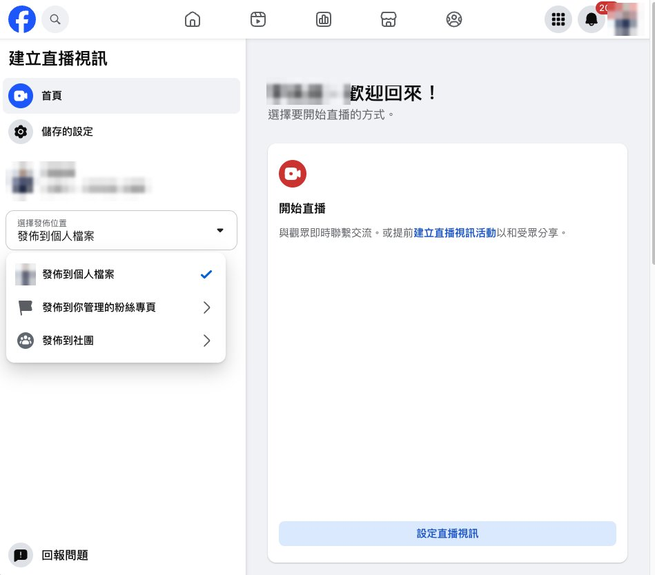
- Choose where to stream:
- Your own profile: the first option, post to your profile.
- Your team's Page: the second option, post to a Page you manage; then click your Page.
- Your team's group: the third option, post to a group; then click your group.
- In the “Go live” card on the right, click the blue button at the bottom to set up the live video.
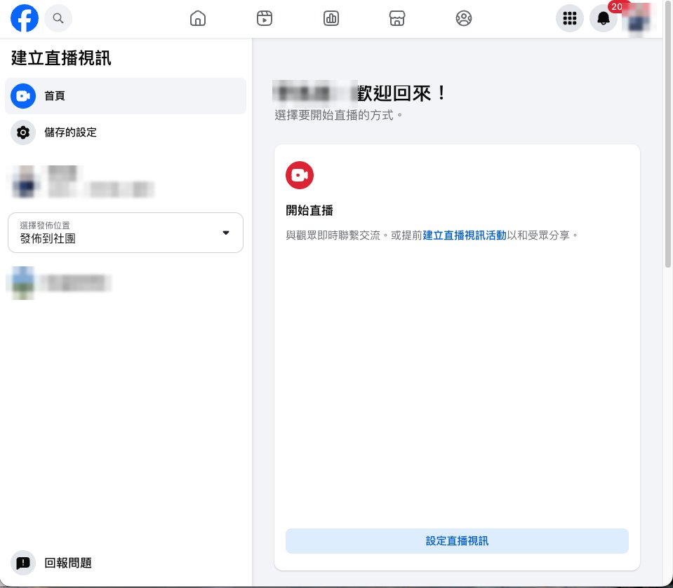
- Under the video source, click Streaming software (the one with the key icon). Don't choose Webcam (the camera icon). Leave “when do you want to go live” set to now.
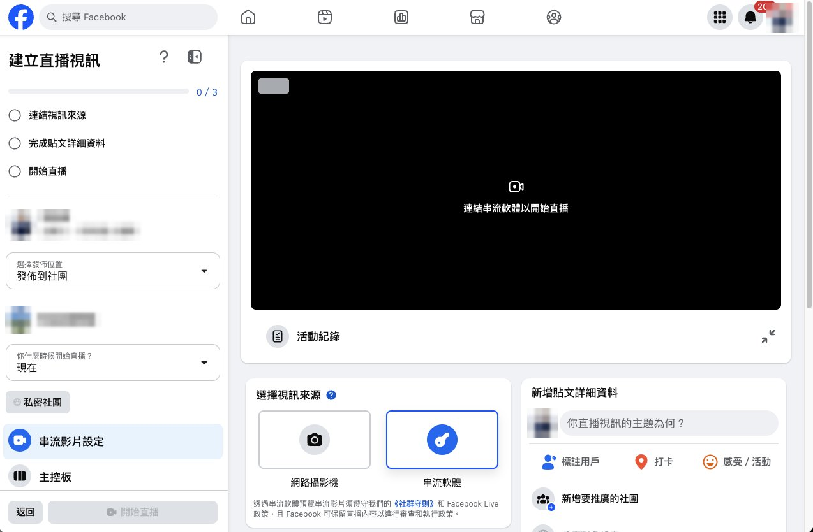
- Scroll down with the mouse to the streaming software setup.
- Click Advanced settings to open them.
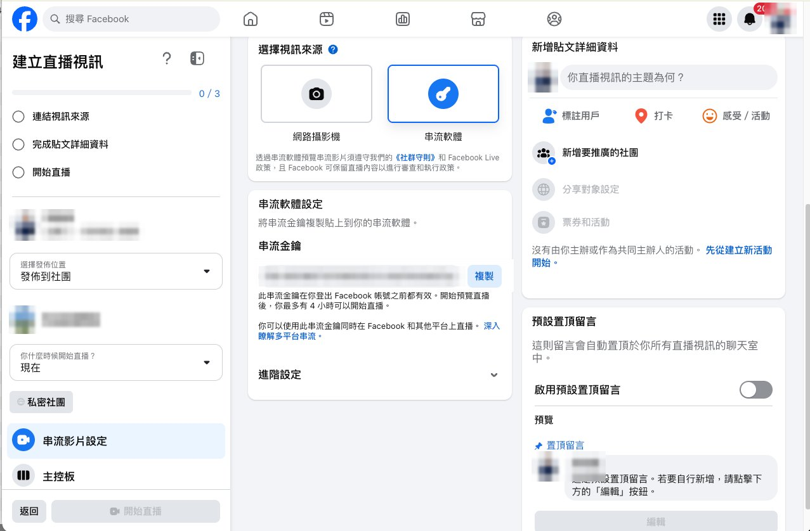
- Turn on the switch next to Persistent stream key (it turns blue). Now this key works for every future stream.
- Check the Server URL: it should start with rtmps://live-api-s.facebook.com. PitchCam already has this address. You don't need to copy it.
- Scroll back up to Stream key and click Copy next to it. The stream key is now copied.
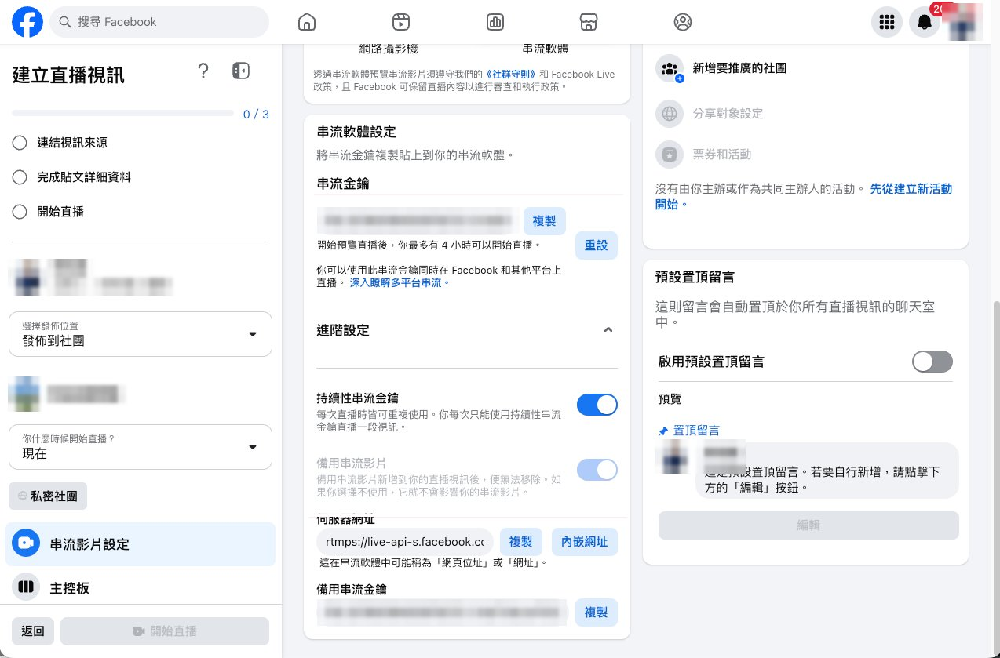
21. Send the stream key to your iPhone
The key is on your computer. Now you need it on your iPhone. Pick one way:
Way A: your computer is a Mac signed in to the same Apple Account as your iPhone
- After clicking Copy on the Mac, do nothing else.
- Your iPhone gets the same copied text automatically (Apple's “Universal Clipboard”). Both need Bluetooth and Wi-Fi on, and must be near each other.
- Go to PitchCam and tap Paste.
Way B: send it to yourself (any computer)
- On the computer, open a messaging app you use (for example WhatsApp on the web or desktop, a “message yourself” chat), or your email.
- Click in the message box and press Ctrl + V (on a Mac, ⌘ + V) to paste the key, then send it.
- On your iPhone, open that message or email. Press and hold the key until a menu appears, then tap Copy.
- Go to PitchCam and tap Paste.
- After pasting, delete the message or email so nobody else sees the key.
22. Paste the stream key into PitchCam
Follow chapter 10: on the camera screen tap LIVE → Facebook → Paste → Test Connection → wait for “Connected. Ready to go live” → Save.
Because the persistent stream key is on, you only do this once. For every later match, just tap LIVE.
23. On match day: going live
Going live needs a tap in PitchCam and a click on Facebook. It helps to have one person on the phone and another on the computer.
- On the computer, open facebook.com/live/create and do steps 4 to 7 of chapter 20: choose where to post, set up the live video, and choose Streaming software.
- On the right, in the post details, click the title box and type a title, for example “Autumn League Round 6: Eagles vs Lions”.
- In PitchCam, tap LIVE and wait until the button is red.
- Back on Facebook, wait a few seconds. The black preview in the middle shows PitchCam's picture, with the scoreboard.
- Click the blue Go live button in the bottom-left corner. Only now can viewers see it.
When you finish
- First, end the live video on Facebook and confirm.
- Then in PitchCam tap the red LIVE → End Live (see chapter 13).
- The live video stays on your Facebook profile, Page, or group.
24. Facebook live FAQ
Facebook keeps asking you to connect streaming software, with no picture.
Facebook isn't receiving PitchCam's picture yet. Check that LIVE in PitchCam is red. If it's yellow or shows Retry, fix the internet first. Then check that the key in PitchCam matches Facebook (after a Reset, paste the new key).
The PitchCam connection test says the server refused the connection.
The key is wrong or no longer valid. Click Copy on Facebook again, then in PitchCam go to Settings → Live → Edit on that setup, paste the key, and test again.
What if I don't turn on the persistent stream key?
The key only works for a while (Facebook says until you log out), so you'd have to get and paste a new one. We recommend turning it on.
Viewers say they can't see the stream.
Check that you clicked Go live on Facebook, and that the post's audience includes the viewers (for example Public, or members of the group).
The stream stutters.
Streaming needs a steady upload speed, at least 5 Mbps. Move to a spot with better signal. With PitchCam's live quality set to “Auto (recommended)”, it drops to 720p automatically when the internet is slow.